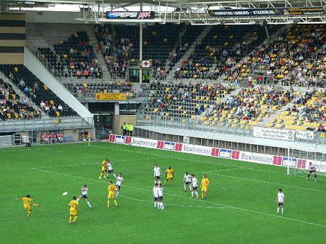

|
Roda JC - Real Zaragoza (1-1) 13 augustus 2006
|
Voordat de wedstrijd begon was er de finale van het internationaal A-jeugd
toernooi
dat ging tussen Hertha BSC en Borussia Mönchengladbach. Hier de prijsuitreiking.
Veel nieuwe gezichten in het PLS bij deze gratis wedstrijd.
Bij het betreden van het veld is er vergeleken bij dezelfde wedstrijd van vijf
jaar
geleden geen enkele speler meer in de beginopstelling.
Nog even een staatsieportret.
Aftrap in het zonnige Parkstad Limburg Stadion.
Supporters uit Weert en uit....Bakwei (?).
Een domme fout van Kah blijft in eerste instantie onbestraft maar bij de zich
vlak
daarna aandienende kans gaat het fout.
Doelpunt Aimar: 0-1, (11').
De snelle achterstand ten spijt was het Roda dat meest in balbezit was.
Een vreugdevol moment in Z16 dat als eerbetoon aan de participatiehouders een
collectief lintje kreeg van een keurkorps aan stewards.
Scheidsrechter Luinge, gedecideerd als immer kent Roda hier een vrije trap toe.

Bodor schiet hopeloos ver over het doel.
Opstootje dat volgens de waarnemers van L1 in de catacomben een vervolg
kreeg middels een "massale vechtpartij" tussen de spelers van beide teams.
Veel oudere supporters op zuid met interessante anecdotes over Roda en Rapid.
Ook veel nieuwe jeugd in de belendende vakken.
Meeuwis toont zich een eredivisiewaardige middenvelder.
In de tweede helft scoort De Fauw de gelijkmaker: 1-1, (51').
Het is een oefenwedstrijd, maar jool = jool!
Even later raakt De Fauw geblesseerd.
Luinge trok voor beide teams enkele malen geel.
Met Roelof valt niet te spotten....
Stukje zuid met op de achtergrond de lelijke zuidwesthoek die meestal leeg is.
Er zat meer in voor Roda dan een gelijkspel maar Cissé speelde deze keer een
mindere wedstrijd terwijl Bodor menige kans verknalde.
Game over. De spelers bedanken het publiek.
En omgekeerd natuurlijk. De Kickoff was een halfuurtje gezellig waarna het erg
stil werd. Pas daarna arriveerden Kujovic, Meeuwis, Sonko en Leemans.
© Koempels Pleasure Dome
|